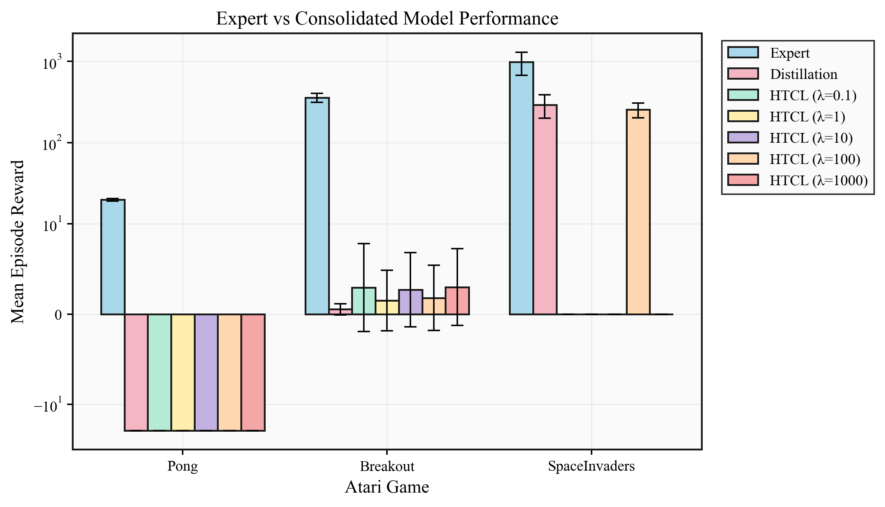

This report summarizes experiments on consolidating three independently-trained Atari DQN experts
(Breakout, SpaceInvaders, Pong) into a single multi-task network.
We compare four consolidation strategies derived from a second-order Taylor expansion framework and knowledge distillation.
The Hybrid method (Taylor + KD) is the clear winner, achieving 30.5% average expert
retention and being the only method to produce positive Pong scores.
2. Experimental Setup
Expert Training
Architecture: 3-layer CNN (32-64-64 channels, kernels 8-4-3, strides 4-2-1) with 512-unit FC hidden layer and a unified 6-action output head covering the union action space of all three games
Replay buffer: 500K transitions, AdamW optimizer, gradient clipping at 10.0
Exploration: Linear epsilon decay from 1.0 to 0.01 over 500K steps
Evaluation Protocol
30 episodes per game, deterministic policy (argmax over valid actions)
episodic_life=False, clip_reward=False, max 27K steps/episode
Action masking: Q-values for invalid actions set to −∞ before argmax
Shared Initialization
All four consolidation methods start from the ensemble-mean anchor:
w̄ = (1/N) Σi we(i)
3. Consolidation Methods
A. One-Shot Joint Consolidation Section 3, Theorem 3.4
All experts are considered simultaneously at the ensemble-mean anchor.
Averaged Fisher and gradient are computed across all tasks, then a single closed-form Taylor correction is applied.
F̄ = (1/N) Σi Fi |
ḡ = (1/N) Σi gi
u* = (F̄ + λ̄ I)−1 [λi · d* − ḡ]
wg = w̄ + u*
Key detail: With anchor = ensemble mean, the weighted drift centroid d* ≈ 0 (Remark 3.6),
so the update simplifies to a Newton step: u* = −(F̄ + λ̄ I)−1 ḡ.
No step size is used.
Fisher computed on 20K high-confidence states per task (top-K by Q-value gap)
Action masking on head layers zeroes drift for untrained actions (Remark 7.1)
B. Multi-Round Iterative Consolidation Section 4, Algorithm 1
Extends One-Shot to K rounds. Each round re-expands around the current global model, recomputes
averaged Fisher/gradient, and applies a Taylor correction with decaying step size.
for k = 0, ..., K−1:
Re-expand at wg(k), compute F̄k, ḡk
uk* = (F̄k + λ̄ I)−1 [λi dk* − ḡk]
wg(k+1) = wg(k) + ηk uk*
recompute_fisher=false: Fisher/gradient computed once at initial anchor and cached for all K steps (cheaper, comparable quality)
Same action masking and high-confidence filtering as One-Shot
C. Hybrid (Taylor + KD) Section 5, Algorithm 2
Two-phase approach combining the best of both worlds. Phase 1 provides a
"warm start" via Taylor consolidation; Phase 2 refines via knowledge distillation.
The key theoretical insight (Theorem 5.2) is that Phase 1's warm start reduces the
KD convergence gap by a factor proportional to the Taylor approximation quality.
Phase 1 — Multi-Round Joint Taylor (identical to Iterative above):
K = 10 rounds, η0 = 0.9, γ = 0.9, cached Fisher
Phase 2 — Knowledge Distillation Refinement:
LKD = (1/N) Σi T2 DKL(σ(Qexpert/T) || σ(Qstudent/T))
wg ← wg − ηKD ∇ LKD
500 KD epochs, lr = 5e-5, temperature T = 2.0, batch size 64
Q-values normalized per-task (zero-mean, unit-variance) before softmax to handle reward scale differences
Gradient clipping at 1.0, AdamW optimizer
D. Pure Knowledge Distillation Baseline
Standard KD without any Taylor warm start. The student starts from the ensemble-mean
anchor and learns to match the teacher Q-distributions directly.
500 epochs, lr = 5e-5, T = 2.0, batch size 64
Same Q-value normalization and training loop as Hybrid Phase 2
Serves as ablation: isolates the value of the Taylor warm start
4. Results
Method
Breakout
SpaceInvaders
Pong
Avg Retention
Expert (upper bound)
386.0 ± 35.0
1030.8 ± 257.4
19.9 ± 0.9
—
One-Shot
2.4 ± 4.0
128.7 ± 83.8
−21.0 ± 0.0
−30.7%
Iterative
3.0 ± 4.2
215.0 ± 119.5
−21.0 ± 0.0
−27.9%
Distillation
5.4 ± 6.5
33.7 ± 19.4
−15.5 ± 3.3
−24.4%
Hybrid (ours)
6.1 ± 4.0
154.2 ± 72.8
15.0 ± 6.6
30.5%
Per-Game Expert Retention
Method
Breakout
SpaceInvaders
Pong
One-Shot
0.6%
12.5%
−103%
Iterative
0.8%
20.9%
−103%
Distillation
1.4%
3.3%
−76%
Hybrid
1.6%
15.0%
75.1%
Key finding: Hybrid is the only method that produces positive Pong rewards (15.0 vs expert 19.9).
All 30 evaluation episodes scored ≥ 1, with a median of 17.5.
This validates the paper's Theorem 5.2: the Taylor warm start provides a meaningful advantage for KD convergence.
5. Visualizations

Fig 1. Mean reward comparison across all methods and games.
Fig 5. Hybrid advantage over each alternative method. Largest gains come from Pong recovery.
6. Analysis
Why Hybrid Works
The Hybrid method combines complementary strengths:
Phase 1 (Taylor) provides a structurally informed starting point by solving a second-order optimization problem that respects the Fisher information geometry. This moves the model close to the expert manifold without gradient-based optimization.
Phase 2 (KD) refines the soft policy distributions, recovering nuances that the diagonal Fisher approximation misses. Starting from the Taylor solution instead of the raw ensemble mean gives KD a massive head start.
Why Pure Taylor Methods Fail on Pong
One-Shot and Iterative both score −21 on Pong (worst possible). The diagonal Fisher approximation
captures parameter importance but cannot represent cross-parameter interactions that are critical for
Pong's precise paddle control. The ensemble-mean initialization also dilutes Pong's specialized features
since Breakout/SpaceInvaders dominate the Fisher spectrum.
Why Pure Distillation Underperforms
Starting from the ensemble mean, pure KD must traverse a larger loss landscape.
At 500 epochs, Pong shows signs of overfitting (reward decreased from −6.4 at 50 epochs to −15.5 at 500 epochs),
while Breakout/SpaceInvaders stagnate at low retention. The Q-value MSE converges to near-zero,
but this does not translate to good action-selection quality.
Breakout Remains Difficult
All methods retain < 2% of expert Breakout performance. Breakout requires highly specialized
feature activations for paddle-ball tracking that are destroyed by ensemble averaging.
This suggests that the initialization strategy, not the consolidation method, is the primary bottleneck for Breakout.
7. Discussion Points for Next Steps
Breakout recovery: Explore task-weighted initialization (anchor closer to Breakout expert) or progressive consolidation that adds tasks one at a time rather than all-at-once
KD early stopping: Pure distillation regressed after ~50 epochs on Pong. Adding early stopping or a validation-based schedule could improve baseline performance
Fisher approximation quality: The diagonal approximation may be insufficient for games requiring precise control. Block-diagonal or K-FAC approximations are worth investigating
Scaling to more games: With N=3, the ensemble-mean dilution effect is moderate. With N=10+, the anchor quality will degrade further, potentially requiring hierarchical merging